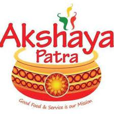

AKSHAYA PATHRA FOUNDATION
Your support can
- Bring 1.8 million and many more children to school to continue their education
- Bring children closer to their dreams by emphasizing on the importance of studies
- Make more memories of having a school life with friends and teachers
- Instil confidence in children that they can become independent in their future
- Make them regular to school so that they can learn something new every day
OUR COMMITMENT CAN WIN YOUR TRUST
- 21 years of nourishing children
- World's largest NGO-run school lunch programme
- 1st NGO in India to be inducted to ICAI Hall of Fame
- Recipient of Gandhi Peace Prize 2021
- Winner of CSR Universe COVID Response Impact Awards 2021
Akshaya Patra – an NGO in India that you can trust
The Akshaya Patra Foundation is an implementing partner for the Government’s midday meal scheme and has been nourishing children since 2000
The Akshaya Patra Foundation started its mid-day meal programme in June, 2000 by providing free mid-day meals to 1,500 children in 5 Government schools in Bengaluru, Karnataka. Over the past 20 years, the constant support from the Government of India, various State Governments and associated organisations has enabled the programme to grow by leaps and bounds. Today, this organisation feeds free mid-day meals to 1.8 million school children in 19,039 Government schools and Government-aided schools. The organisation currently has its presence in 60 kitchens across 14 states & 2 Union territories in India. This not-for-profit organisation has been conferred as the world’s largest NGO-run mid-day meal programme (source).